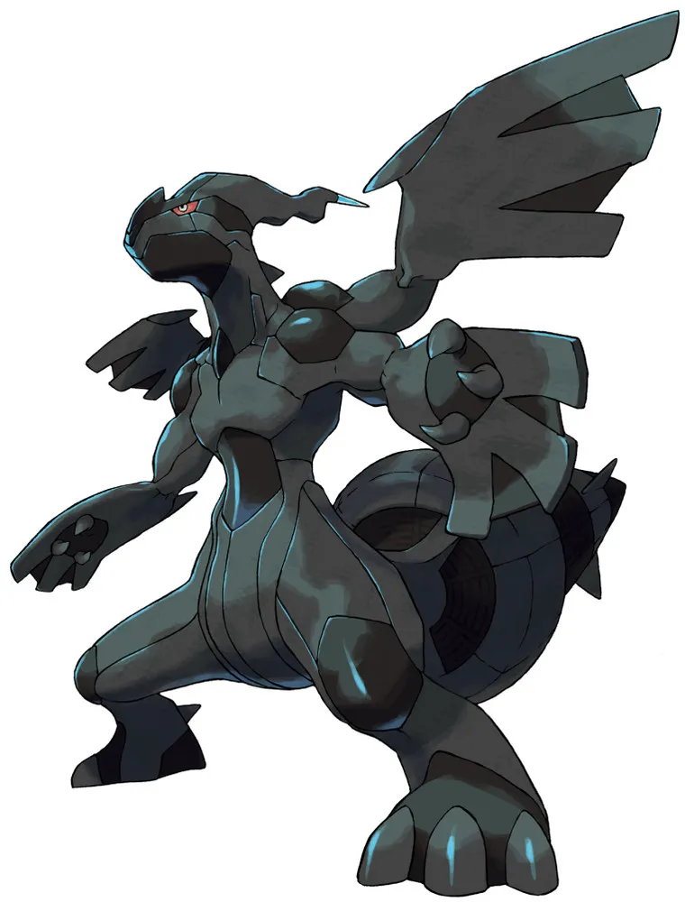
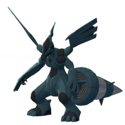

🧭 Quick Navigation
📖 Introduction
Zekrom is a Dragon/Electric Legendary Raid boss in Pokémon GO that challenges trainers with its dual typing and high stat pool. Understanding its weaknesses and best counters is essential for victory.
Zekrom is a Legendary Dragon/Electric-type Pokémon introduced in Pokémon GO raids. It is known for its massive attack stats and powerful charged moves, making it a dangerous opponent for unprepared trainers.
While Zekrom has high damage potential, it is weak against Ice-, Dragon-, and Fairy-type moves. This guide will help you pick the best counters, understand its movesets, and maximize your chances of victory.
Whether you're a solo raider or part of a large group, these tips and strategies will make defeating Zekrom easier and help you get the rewards and chance at a shiny Zekrom.
🧠 Zekrom Raid Strategy
Zekrom is a powerful Dragon and Electric-type Legendary Pokémon with high attack stats and strong moves like Wild Charge and Outrage.
Unlike some raid bosses, Zekrom does not have a double weakness, making it a balanced but challenging raid.
- ⚡ Avoid Electric-weak Pokémon
- 🐉 Be careful using Dragon-types (they take heavy damage)
- 🪨 Use high DPS counters to finish faster
Related guides: Zapdos | Altered Giratina
💡 Expert Insight
Zekrom combines Electric and Dragon typing, making it a versatile and dangerous raid boss. Its weaknesses to Dragon, Ice, Fairy, and Ground types provide multiple effective strategies.
Ice-type attackers are particularly useful due to their ability to deal strong damage while avoiding some of Zekrom’s resistances. Team coordination can make a significant difference in this raid.
Raid Difficulty
In Pokémon GO, Zekrom raids are generally tier 5 Legendary battles that require multiple trainers with strong DPS counters. With proper team composition, even small groups can defeat Zekrom efficiently.
📊 Zekrom Stats
| Type | Dragon / Electric |
| Max CP | 4565 |
| Weather Boost | Windy, Rainy |
| Shiny | Yes |
| Base Attack | 275 |
| Base Defence | 211 |
| Base Stamina | 205 |
Zekrom has a very high attack stat, which makes it a powerful raid attacker once captured.
🎯 Catch CP & 100% IV
After defeating Zekrom, you can catch it in the bonus encounter.
CP Range:
- No Weather Boost: 2,217-2,307 CP
- Weather Boost: 2,771-2,884 CP
100% IV:
- 2307 (Normal)
- 2884 (Weather Boosted)
Use:
- Golden Razz Berry
- Curveball Excellent Throws
⚠️ Zekrom Weaknesses
Zekrom has a relatively small set of weaknesses thanks to its strong dual typing.However, using the correct counters can make the raid significantly easier.
Tip: Ground-type Pokémon are especially useful because they resist Electric moves from Zekrom.
| Category | Details |
|---|---|
| ❌ Weak To: |
 Ground • Ground •
 Ice • Ice •
 Dragon • Dragon •
 Fairy Fairy
|
| ✅ Resistant To: |
 Flying • Flying •
 Steel • Steel •
 Fire • Fire •
 Water • Water •
 Grass • Grass •
 Electric Electric
|
Notes: Because of these resistances, avoid using Pokémon with these move types.
🗡️ Best Counters for Zekrom
The best counters are strong Dragon and Ground attackers.
🌍 Ground-Type Counters (Best Overall Choice)
Ground-type Pokémon are the most reliable counters. They deal super-effective damage and resist Electric-type attacks.
- Mud Shot + Earthquake
- Mud Shot + Precipice Blades
- Mega Ground Pokémon provide team-wide damage boosts
- Groudon : (Mud Shot / Precipice Blades)
- Excadrill : (Mud Slap / Scorching Sands)
- Landorus: (Mud Shot / Sandsear Storm)
High damage and bulk makes Groudon the #1 choice.
Very tanky, can take hits while dealing strong Ground damage.
🐉 Dragon-Type Counters (High DPS)
Dragon attackers deal strong super-effective damage, but they take heavy damage from Zekrom’s Dragon moves. Use them in coordinated raid groups.
- Dragon Tail + Outrage
- Dragon Breath + Draco Meteor
- Garchomp: (Dragon Tail / Breaking Swipe)
- Palkia: (Dragon Tail / Draco Meteor)
Strong Dragon STAB moves deal heavy damage.
High DPS; watch out for Zekrom’s Electric attacks.
❄️ Ice-Type Counters (Solid Secondary Option)
Ice-types deal super-effective damage but must avoid Electric charged moves. They perform best when Zekrom lacks strong Electric fast moves.
- Mamoswine: (Avalanche)
Can double as an Ice counter if Zekrom uses Dragon moves.
From my testing, Garchomp with Dragon Tail and Outrage performs exceptionally against Zekrom. Salamence and Dragonite are also strong, but consider adding Electric-resistant Pokémon to balance your team.
⚔️ Why Ground Counters Are Best
Ground-type Pokémon are the safest and most effective counters against Zekrom.
- 🌍 Strong super-effective damage
- ⚡ Resist Electric-type attacks
- 💪 High survivability in raids
While Dragon-types deal high damage, they are risky because they also take heavy damage.
🏆 Best Regular Counters
Regular pokemon that amplify the right types give you a powerful edge. Below are top Regular counters with short notes on why they excel.
| Pokémon | 🗡️ Fast Moves | 💥 Charged Moves | 🔄 Elite Moves | 🏆 Best Moves | 🧪 Why This Counter Works |
|---|---|---|---|---|---|
| Eternatus | Poison Jab / Dragon Tail | Flamethrower / Dragon Pulse / Sludge Bomb | Dynamax Cannon | Dragon Tail and Dynamax Cannon | Dragon type with strong Dragon moves; hits Zekrom super effectively. High HP helps survive Zekrom’s attacks |
| Primal Groudon | Mud Shot / Dragon Tail | Earthquake / Fire Blast / Solar Beam | Precipice Blades / Fire Punch | Mud Shot and Precipice Blades | Ground typing resists Electric moves and Ground moves hit Zekrom’s Electric typing super effectively. Durable tank. |
| Rayquaza | Air Slash / Dragon Tail | Aerial Ace / Dragon Ascent / Ancient Power / Outrage | Hurricane / Breaking Swipe | Dragon Tail and Outrage | Dragon type with high DPS moves; great for coordinated raids but vulnerable to Zekrom’s Dragon attacks |
| Salamence | Fire Fang / Dragon Tail / Bite | Fly / Fire Blast / Hydro Pump / Draco Meteor / Brutal Swing / Crunch | Outrage | Dragon Tail and Outrage | Dragon type with fast Dragon moves; hits hard but requires dodging due to Zekrom’s Dragon moves. |
| Origin Palkia | Dragon Breath / Dragon Tail | Hydro Pump / Fire Blast / Aqua Tail / Draco Meteor | None | Dragon Tail and Draco Meteor | Dragon moves hit Zekrom’s Dragon type super effectively; moderate bulk requires careful timing. |
| Landorus | Mud Shot / Extrasensory | Superpower / Earthquake / Bulldoze / Stone Edge | Sandsear Storm | Mud Shot and Sandsear Storm | Ground typing resists Electric attacks and deals strong super-effective Ground damage. |
| White Kyurem | Dragon Breath / Steel Wing / Ice Fang | Blizzard / Ancient Power / Dragon Pulse / Focus Blast / Fusion Flare / Ice Burn | None | Steel Wing and Focus Blast / Fusion Flare | Dragon/Ice typing; Dragon moves hit Zekrom super effectively; Ice moves cover Dragon weakness |
| Regidrago | Bite | Hyper Beam / Vise Grip / Outrage / Dragon Pulse / Breaking Swipe | Dragon Breath / Dragon Energy | Bite and Dragon Energy | Dragon type; strong Dragon energy moves. Needs dodging due to Zekrom’s charged moves |
| Origin Dialga | Dragon Breath / Metal Claw | Iron Head / Thunder / Draco Meteor | Roar of Time | Dragon Breath / Metal Claw and Roar of Time | Dragon/Steel type; Dragon moves super effective; Steel resists some Zekrom attacks |
| Haxorus | Counter / Dragon Tail | Earthquake / Surf / Dragon Claw / Night Slash | Breaking Swipe | Dragon Tail and Earthquake | Pure Dragon; hits hard but fragile vs Zekrom’s Dragon moves |
| Garchomp | Mud Shot / Dragon Tail | Earthquake / Sand Tomb / Fire Blast / Outrage / Breaking Swipe | Earth Power | Mud Shot and Earth Power | Dragon/Ground; Ground resists Electric moves, Dragon moves hit Zekrom hard; very strong DPS |
| Dialga | Metal Claw / Dragon Breath | Iron Head / Thunder / Draco Meteor | None | Metal Claw / Dragon Breath and Draco Meteor | Dragon/Steel; Dragon moves super effective, Steel resists some damage; solid all-rounder |
| Groudon | Mud Shot / Dragon Tail | Earthquake / Fire Blast / Solar Beam | Precipice Blades / Fire Punch | Mud Shot and Precipice Blades | Ground typing; same as Primal Groudon; strong against Electric moves. |
| Black Kyurem | Shadow Claw / Dragon Tail | Stone Edge / Blizzard / Iron Head / Outrage / Fusion Bolt / Freeze Shock | None | Dragon Tail and Freeze Shock | Dragon/Ice; Dragon and Ice moves hit Zekrom super effectively; good DPS if protected. |
| Dragonite | Steel Wing / Dragon Tail / Dragon Breath | Hyper Beam / Superpower / Hurricane / Thunder Punch / Outrage / Dragon Claw | Draco Meteor / Dragon Pulse | Dragon Tail and Outrage | Dragon/Flying; Dragon moves hit Zekrom super effectively; Flying adds resistance to Ground moves |
| Excadrill | Mud Slap / Mud Shot / Metal Claw | Earthquake / Drill Run / Scorching Sands / Rock Slide / Iron Head | None | Mud Slap and Drill Run | Ground/Steel; resists Electric moves, Ground moves super effective; durable and strong DPS |
👤 Best Shadow Counters
Shadow pokemon that amplify the right types give you a powerful edge. Below are top Shadow counters with short notes on why they excel.
| Pokémon | 🗡️ Fast Moves | 💥 Charged Moves | 🔄 Elite Moves | 🏆 Best Moves | 🧪 Why This Counter Works |
|---|---|---|---|---|---|
| Shadow Rhyperior | Mud Slap / Smack Down | Skull Bash / Superpower / Earthquake / Stone Edge / Surf / Breaking Swipe | Rock Wrecker | Mud Slap and Earthquake | Shadow + Ground moves = high DPS; Ground typing resists Electric moves |
| Shadow Latios | Zen Headbutt / Dragon Breath | Aura Sphere / Solar Beam / Psychic / Dragon Claw | Luster Purge | Dragon Breath and Dragon Claw | Shadow + Dragon moves = max damage; Dragon type hits Zekrom’s Dragon typing super effectively. |
| Shadow Dialga | Metal Claw / Dragon Breath | Iron Head / Thunder / Draco Meteor | None | Metal Claw / Dragon Breath and Draco Meteor | Shadow boosts Dragon moves; Steel/Dragon typing gives resistance to some attacks |
| Shadow Palkia | Dragon Breath / Dragon Tail | Fire Blast / Hydro Pump / Aqua Tail / Draco Meteor | None | Dragon Tail and Draco Meteor | Shadow Dragon moves = stronger DPS; hits Zekrom super effectively. |
| Shadow Excadrill | Mud Slap / Mud Shot / Metal Claw | Earthquake / Drill Run / Scorching Sands / Rock Slide / Iron Head | None | Mud Slap and Earthquake | Shadow Ground moves; resists Electric attacks; very high DPS. |
| Shadow Salamence | Fire Fang / Dragon Tail / Bite | Fly / Fire Blast / Hydro Pump / Draco Meteor / Brutal Swing / Crunch | Outrage | Dragon Tail and Outrage | Shadow Dragon moves = high damage; needs dodging vs Dragon moves. |
| Shadow Dragonite | Steel Wing / Dragon Tail / Dragon Breath | Hyper Beam / Superpower / Hurricane / Thunder Punch / Outrage / Dragon Claw | Draco Meteor / Dragon Pulse | Dragon Tail and Outrage | Shadow Dragon moves; solid damage; Flying adds slight resistance. |
| Shadow Mamoswine | Mud Slap / Powder Snow | Bulldoze / High Horsepower / Stone Edge / Avalanche / Icicle Spear | Ancient Power | Powder Snow and Avalanche | Shadow + Ice moves; Ice moves hit Dragon type super effectively; good secondary option. |
| Shadow Groudon | Mud Shot / Dragon Tail | Earthquake / Fire Blast / Solar Beam | Precipice Blades / Fire Punch | Mud Shot and Precipice Blades | Ground typing resists Electric; Shadow boosts damage output |
| Shadow Garchomp | Mud Shot / Dragon Tail | Earthquake / Sand Tomb / Fire Blast / Outrage / Breaking Swipe | Earth Power | Mud Shot and Earth Power | Dragon/Ground; super-effective moves; Shadow boosts DPS; strong combo vs Zekrom |
⚡ Best Mega Counters
Mega pokemon that amplify the right types give you a powerful edge. Below are top Mega counters with short notes on why they excel.
| Pokémon | 🗡️ Fast Moves | 💥 Charged Moves | 🔄 Elite Moves | 🏆 Best Moves | 🧪 Why This Counter Works |
|---|---|---|---|---|---|
| Mega Rayquaza | Air Slash / Dragon Tail | Aerial Ace / Dragon Ascent / Ancient Power / Outrage | Hurricane / Breaking Swipe | Dragon Tail and Outrage | Dragon type; boosts Dragon moves for all teammates; hits Zekrom super effectively. |
| Mega Salamence | Fire Fang / Dragon Tail / Bite | Fly / Fire Blast / Hydro Pump / Draco Meteor / Brutal Swing / Crunch | Outrage | Dragon Tail and Draco Meteor | Dragon type; high DPS; Mega boost supports other Dragon counters. |
| Mega Sceptile | Fury Cutter / Bullet Seed | Aerial Ace / Earthquake / Leaf Blade / Dragon Claw / Breaking Swipe | Frenzy Plant | Bullet Seed and Frenzy Plant | Grass/Dragon; boosts Dragon damage; Grass isn’t directly super effective but contributes to team DPS |
| Mega Latios | Zen Headbutt / Dragon Breath | Aura Sphere / Solar Beam / Psychic / Dragon Claw | Luster Purge | Dragon Breath and Dragon Claw | Dragon type; boosts team Dragon damage; strong DPS vs Zekrom. |
| Mega Latias | Zen Headbutt / Dragon Breath / Charm | Aura Sphere / Thunder / Psychic / Outrage | Mist Ball | Charm and Outrage | Dragon type; Dragon moves super effective; adds team-wide boost. |
| Mega Gardevoir | Magical Leaf / Charge Beam / Confusion / Charm | Shadow Ball / Psychic / Triple Axel / Dazzling Gleam | Synchronoise | Charm and Shadow Ball / Dazzling Gleam | Fairy type; Fairy moves hit Dragon type super effectively; resists Dragon moves; supports team DPS. |
| Mega Garchomp | Mud Shot / Dragon Tail | Earthquake / Sand Tomb / Fire Blast / Outrage / Breaking Swipe | Earth Power | Mud Shot and Earth Power | Ground/Dragon; Ground moves super effective vs Electric; Dragon moves super effective vs Dragon; boosts team. |
👥 Raid Difficulty & Team Size
| Player Level | Recommended Trainers |
|---|---|
| Beginner | 6–8 players |
| Intermediate | 4–6 players |
| High-Level | 2–4 players |
Zekrom is a moderately difficult Tier 5 raid due to its high damage output and lack of double weaknesses.
💊 Revive & Potion Cost
- Average revives used: 8–14
- Average potions used: 10–18
- Dodging significantly reduces resource usage
- Using Mega Pokémon reduces total relobbies
❌ Common Raid Mistakes
- Not bringing a Mega Pokémon for team boosts
- Using weather-boosted Pokémon of the wrong type
- Relobbying too late and losing damage time
- Ignoring dodging during hard-hitting moves
🧩 Best Team Compositions
Optimized Team
- Mega Rayquaza (Dragon Tail + Outrage)
- Rayquaza (Dragon Tail + Outrage)
- Salamence (Dragon Tail + Draco Meteor)
- Dragonite (Dragon Tail + Outrage)
- Palkia
- Mega Gardevoir
Garchomp leads the team because its Ground typing resists Electric moves, while Dragonite provides strong neutral damage. Metagross can survive longer against Dragon Breath.
Budget Team
If you don’t have legendary Pokémon, these are good options:
- Dragonite (Dragon Tail + Outrage)
- Garchomp (Mud Shot + Earth Power)
- Excadrill (Mud-Slap + Drill Run)
- Togekiss
- Glaceon (Frost Breath + Avalanche)
- Mamoswine
If possible, use a Mega Dragon or Mega Ground Pokémon to boost the damage of other trainers’ Pokémon during the raid.
🎯 How to Catch Zekrom
- 🟡 Use Golden Razz Berry
- 🎯 Aim for Excellent Curveball Throws
- ⏱️ Wait for attack animation before throwing
- 🌀 Always throw curveballs for higher catch rate
👥 Raid Difficulty & Trainers Needed
Recommended Group Size
- 2 Trainers: Possible with max-level counters
- 3 Trainers: Reliable clear
- 4+ Trainers: Very safe win
With strong Ground-type counters and proper Mega boosts, Zekrom is one of the easier Dragon-type Legendary raids.
🧠 Raid Strategy & Advanced Tips
1. Prioritize Ground Teams
Ground-type Pokémon reduce incoming Electric damage and provide consistent performance across all movesets.
2. Watch for Dragon-Type Charged Moves
If Zekrom is using Outrage or Draco Meteor, Dragon counters will faint quickly. Mix in Ground-types for stability.
3. Use Mega Evolutions Smartly
Mega Ground or Mega Dragon Pokémon increase total raid DPS. Coordinate Mega usage for maximum team efficiency.
Zekrom’s dual Dragon and Electric typing creates key vulnerabilities — particularly to **Dragon**, **Ice**, **Ground**, and **Fairy-type moves**. When choosing counters, you want Pokémon that not only deal super-effective damage but are also resilient enough to survive Zekrom’s powerful charged moves. For example, **Salamence with Dragon Tail and Outrage** deals significant Dragon-type damage, while **Mamoswine with Powder Snow and Avalanche** delivers strong Ice coverage. **Gardevoir with Charm and Dazzling Gleam** offers solid Fairy-type damage while resisting many of Zekrom’s offensive options.
Weather significantly impacts this encounter. In **Rainy weather**, Electric and Water moves receive a weather boost — which helps Water counters against Zekrom’s Dragon attacks. In **Partly Cloudy or Cloudy weather**, Dragon and Fairy moves are boosted, increasing the damage your counters deal. Check the in-game weather before forming your team so you can take full advantage of boosted moves and maximize damage per second (DPS).
Zekrom’s charged moves such as **Fusion Bolt** and **Outrage** hit hard and can quickly knock out unprepared counters. Learning to **dodge these powerful charged moves**—especially when your Pokémon are low on health—can extend your counters’ survival and significantly increase total damage output, particularly in smaller raid groups where every HP counts.
When planning your team, start with your highest DPS counters that exploit Zekrom’s weaknesses. Once these Pokémon begin to faint, rotate in secondary attackers that still deal super-effective damage but offer better bulk or durability. In larger raid groups, coordinating your lineup — such as leading with Dragon and Ice counters followed by Fairy and Ground types — helps maintain consistent pressure and speeds up the clear.
Using appropriate **Mega Evolutions** that support your primary counter types — such as **Mega Gardevoir** for Fairy support or **Mega Ampharos** for Electric support — can help boost your team’s effectiveness. With thoughtful team composition, weather-aware planning, and tactical dodging, Zekrom becomes a more manageable raid boss that you can defeat efficiently and consistently.
Beginner Raid Strategy
If you are new to legendary raids, follow these tips:
- Join raids with at least 5 trainers
- Use recommended counters
- Revive fainted Pokémon quickly
- Focus on consistent damage
Advanced Raid Strategy
Experienced players can optimize their performance by using advanced raid tactics.
- Use Mega Evolutions for damage boosts
- Coordinate attacks with teammates
- Use Party Play bonuses
- Create high DPS teams
Solo / Duo / Group Difficulty
| Raid Difficulty | Recommended Trainers |
|---|---|
| Solo | Impossible |
| Duo | Extremely difficult |
| Small Group | 3–4 trainers |
| Safe Group | 5–7 trainers |
🌦️ Weather Boost
Weather conditions can affect both the power of the raid boss and the CP of the Pokémon you catch afterward:
☀️ Sunny Weather
- Boosts Ground-type counters
🌬️ Windy Weather
- Boosts Dragon-type moves and makes Zekrom stronger
🌧️ Rainy Weather
- Boosts Electric-type moves and makes the raid slightly harder
🌨️ Snowy Weather
- Boosts Ice-type counters
This makes the raid slightly harder during these weather conditions.
🌀 Zekrom Moveset
Zekrom has several powerful Electric and Dragon type attacks in Pokémon GO. Knowing its possible moves helps you plan better counters and battle strategy.
🗡️ Fast Moves
- Charge Beam
- Dragon Breath
💥 Charged Moves
- Flash Cannon
- Wild Charge
- Outrage
- Crunch
🔄 Elite Moves
- Fusion Bolt
Most Dangerous Moves
Dangerous Moves: Wild Charge deals very high damage, especially to Water-type attackers.
Zekrom is more dangerous when it uses Electric-type charged moves like Wild Charge or Fusion Bolt, especially against Water- or Flying-type counters.
Zekrom can use Dragon Breath to wear down your team quickly. Fusion Bolt is particularly dangerous — I recommend keeping bulky Electric-resistant Pokémon in the back row to absorb these hits.
Difficulty
Zekrom can use moves such as Fusion Bolt, Wild Charge, Outrage, and Crunch. While it is an offensive monster, its Electric-type charged moves can destroy Water or Flying-type counters, and Outrage can shred Dragons if shields aren’t managed.
🎮 Is Zekrom Good in PvE and PvP?
PvE (Raids & Gyms)
Zekrom is one of the best Electric-type attackers in Pokémon GO. It performs extremely well in raids against Water- and Flying-type bosses.
PvP (GO Battle League)
Zekrom is strong in Master League thanks to its powerful Electric and Dragon moves. However, it requires high energy moves, which can make battles tricky.
✨ Shiny Zekrom in Pokémon GO
Yes, trainers have a chance to encounter a Shiny Zekrom after completing a raid. Shiny Zekrom has a darker, bluish-black appearance compared to the standard version, making it highly sought after by collectors.
Shiny Pokémon in Legendary Raids are rarer than normal encounters, so you may need to defeat multiple Zekrom raids to get a shiny one.
🚶 Buddy Distance
20 km (per Pokémon GO buddy distance)
⚖️ Shadow & Mega Comparison
🧬 Best Mega Evolutions
Recommended Megas to use against Zekrom:
- Sceptile, Rayquaza, Garchomp, Salamence, Latios, Latias – 🐉 Dragon boost
- Gardevoir – ✨ Fairy boost
How to Catch Zekrom
- Use Golden Razz Berries
- Throw Curveball Excellent throws
- Wait for attack animation before throwing
- Stay patient and time your throws carefully
Why Zekrom is Important
Zekrom is widely considered one of the best Electric-type attackers in Pokémon GO. Its high attack stat and powerful Electric moves make it extremely useful in raids against Water and Flying-type Pokémon.
Many trainers invest resources in powering up Zekrom because it performs well in raids, gym battles, and PvE gameplay.
📌 Is Zekrom Worth Powering Up?
Yes, Zekrom is one of the best Legendary Pokémon to raid.
- One of the strongest Electric attackers.
- Powerful Dragon-type moves
- Useful in PvE and PvP
- Chance to encounter Shiny Zekrom
🎁 Raid Rewards
After defeating Zekrom in a 5-Star Raid Battle, trainers receive several useful rewards including Rare Candy, Golden Razz Berries, TMs, and Stardust. The exact rewards depend on raid performance, gym control, and friendship bonuses.
| Reward | Typical Amount |
|---|---|
| Golden Razz Berry | 3 – 12 |
| Rare Candy | 3 – 9 |
| Revive | 6 – 15 |
| Hyper Potion | 6 – 15 |
| Fast TM | 0 – 2 |
| Charged TM | 0 – 2 |
| Stardust | 1000 |
Premier Balls
After the raid battle, trainers receive Premier Balls to attempt catching Zekrom. The number of Premier Balls depends on:
- Damage dealt during the raid
- Gym control by your team
- Raid completion speed
- Friendship level with other trainers
Most trainers receive 8 – 16 Premier Balls.
🖼️ Regular vs Shiny Zekrom Forms
Shiny Zekrom has a darker, bluish-black appearance compared to the standard version.

Zekrom
Images are used for informational and educational purposes only. All rights belong to their respective owners.

Shiny Zekrom
Images are used for informational and educational purposes only. All rights belong to their respective owners.
❓ FAQ
Can Zekrom be shiny in Pokémon GO?
Yes! Shiny Zekrom is available in raids. It features a darker black body with a brighter green lightning tail.
Best Mega Evolution support?
A Mega Dragon-type Pokémon boosts overall Dragon damage for the team.
What is the most dangerous move?
Outrage can deal heavy damage quickly if not dodged.
Can Zekrom be defeated with 3 trainers?
Yes, if all trainers use high-level Dragon-type counters.
What moves does Zekrom use in raids?
Zekrom can use moves like Dragon Breath, Outrage, Thunderbolt, and Wild Charge, dealing powerful Dragon and Electric-type damage to challengers.
Is Zekrom difficult to defeat?
Zekrom has very high attack and solid bulk, making it a challenging raid boss. Using strong Ground or Ice-type Pokémon is the most efficient strategy.
What makes Zekrom unique?
Zekrom is the Electric Dragon of the Unova region, known for its immense power, striking design, and dual Electric/Dragon typing in raids.
🏁 Conclusion
Zekrom is a powerful Legendary raid boss with manageable weaknesses and strong counters. Ground-types provide the safest strategy, while Dragon-types offer maximum DPS for experienced groups. Plan around weather boosts and charged moves to secure smooth and efficient raid wins.
- Focus on Dragon, Ice, Fairy, or Ground types.
- Avoid using Water and Flying types—they get destroyed by Electric moves.
- Manage shields around Outrage and Wild Charge.
- Keep damage fast and aggressive.
- Preparation makes this raid very manageable.
⚡Quick picks
- Best Mega Team: Rayquaza, Garchomp
- Best Shadow Team: Garchomp
- Best Regular Team: Mamoswine, Groudon